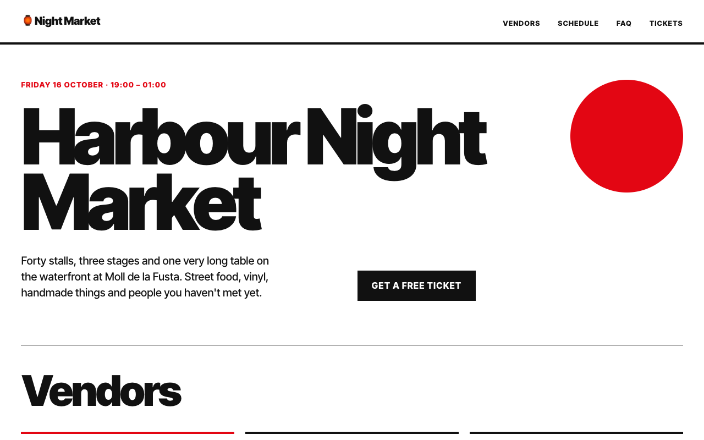
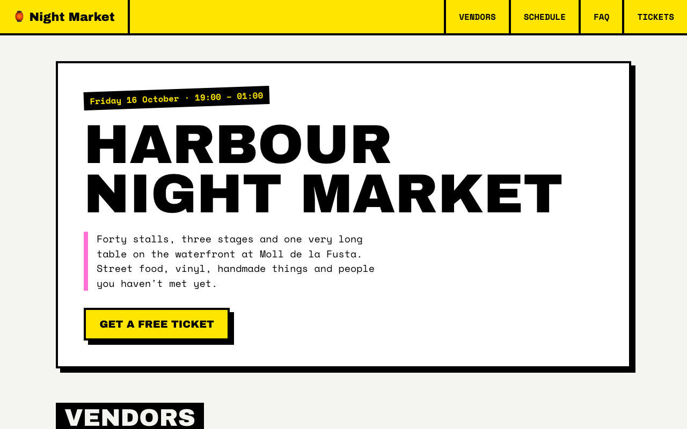
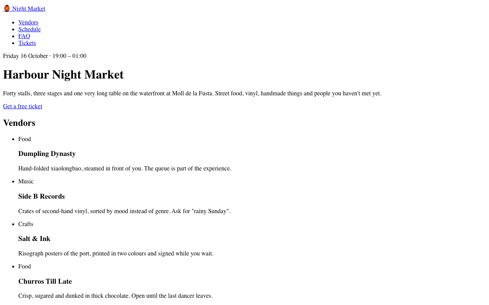

Programming Interactivity · Lecture 2
CSS,or how to
connecting styles · anatomy of a rule · selectors · the cascade · specificity · properties & units



same HTML ×5
0:00. Keep the prologue to 8 minutes: click three themes, not five, if the room is slow.
Welcome back. Last week: HTML = meaning. Today: how it looks. Three hours, one 15-minute break at 1:15.
Don't explain the collage yet — the next slide does it live.
Keys: p opens presenter view, m the slide menu, n notes, Esc leaves an editor so arrows work again.
Warm-up
One page. Five outfits.
The page starts with no CSS at all . Click the switcher at the bottom of the page (or click into it and press 0–4). Go: nothing → swiss → brutal → neon → zine.
Scroll inside a couple of them — show vendor cards, the sold-out stamp in zine, the striped rows in brutal.
Ask: "How many HTML files is this?" Take guesses. Answer on the next slide: one.
What just happened
Not a single tag changed.
One line swapped a stylesheet. The HTML says what things are . The CSS says how they look . Keep them apart and you can re-dress a site without touching its content.
Cascading Style Sheets: style = how it looks · sheets = a set of style rules · cascading = who wins when rules disagree (Act 4).
History in 30 seconds: before CSS, style lived inside HTML — <font color>, <center>, bgcolor, layout tables and spacer GIFs on every page. Change the red = edit 400 files; layout tables confused screen readers. 1994: Håkon Wium Lie at CERN proposes "Cascading HTML Style Sheets"; CSS 1 ships 1996. Today: about a hundred modules, still growing.
This is the whole idea of CSS. Mention CSS Zen Garden (2003, Dave Shea): one HTML file, hundreds of designs submitted by designers worldwide. It convinced the industry that separating content and style works.
Everything today is about the right-hand side of that separation.
Our client for today
The Harbour Night Market needs a website
From: Marta, Harbour Night MarketSubject: site goes live Friday 😬Our developer finished the HTML. It's all there — vendors, schedule, tickets.
But it looks like 1995. Can you make it feel like a night market ?
— M.
Get the files: github.com/nlopin/programming-interactivity-exercises02-css-fundamentals
Everyone gets this exact HTML (project/starter/). It's well-structured, semantic, lots of classes to hook into — the kind of HTML we wrote last week.
By the end of today each of you has your own outfit for it. Be honest about layout: the showcase grids use one line of next week's CSS — it's in their starter file as "magic for now".
The plan · 3 hours
Five acts and a finale
Act 1 Plug it in connecting CSS to HTML0:06
Act 2 Speak CSS anatomy of a rule0:28
Act 3 Point at things selectors0:42
☕ Break 15 minutes1:15
Act 4 Settle the fight cascade & specificity1:30
Act 5 The toolbox colour, type, boxes, units2:00
Finale Dress the market your makeover2:30
Rule of the day: you type something every 15 minutes.
Point at the times — the footer of each slide shows which act we're in. Presenter view (p) tells me if I'm running late.
<link>
Act 1
Plug it in
0:06 – 0:28 how CSS reaches the HTML
browser defaults style="" <style> <link> paths
Before you write a line
You never start from zero
That "naked" page wasn't unstyled. Every browser ships a user-agent stylesheet : the reason h1 is big, links are blue, and body has an 8px margin.
Every CSS you write is layered on top of this. It's also why pages look slightly different in Chrome, Safari and Firefox — their default sheets differ a bit. That's why people use a small "reset".
DevTools shows these rules labelled user agent stylesheet .
From smallest reach to largest
Three ways to attach CSS
Your default is <link>: one file styles the whole site, and the browser caches it.
1. style attribute: one element. You'll see it a lot when JavaScript sets styles.
2. <style> element: one page. Fine for demos and single-page experiments.
Inline can't do :hover or media queries and beats every selector (Act 4). @import inside CSS also exists — it makes the browser wait, so prefer <link> (the demo themes use it for Google Fonts; fine in a demo).
3. <link>: one file, any number of pages. This is your default. rel says what kind of resource it is; href says where.
Predict
Paths start where the HTML file is
market/
├── index.html
├── css/
│ └── style.css
└── about/
└── team.html
From index.html:href="css/style.css"
From about/team.html:href="../css/style.css" — .. = up one folder
What about href="/css/style.css"?Starts at the site root . Breaks when you open the file straight from your disk, and on sites that live in a sub-folder. Use relative paths.
Ask each question, wait for an answer, then reveal. Most "my CSS doesn't work" bugs in the first weeks are this slide.
The tool you'll use every day
DevTools: the browser tells on itself
Styles Computed Layout Event Listeners
element.style { }
.card h3 {2 style.css:12
colr : tomato ; 1
font-size : 32px ;
margin : ▸ 8px 0 ;
}
h3 {user agent stylesheet
display : block ;
font-size : 1.17em ; 3
}
⚠ + strike-through = the browser couldn't read it. Your typo detector.File and line — click it to jump to the source.Crossed out, no ⚠ = valid, but it lost a fight. Act 4.
Click any value to edit it live. Tick boxes switch declarations on and off. Nothing is saved — experiment freely.
2 minutes, projected, BEFORE Ex 1, so everyone can do its step 4. The ⚠ / crossed-out legend comes back in the bug hunt and Act 4. Open real DevTools on the starter page and show the same things: right-click → Inspect, the Styles panel, the checkbox toggles, editing a value, the Computed tab (the final answer after the cascade).
Shortcut: ⌘⌥I (Mac), F12 or Ctrl+Shift+I (Windows). ⌘⌥C jumps straight into "pick an element".
your turn
Exercise 1 · solo · 10 min
Plug in the market
Get the repo github.com/nlopin/programming-interactivity-exercisesgit clone, or Code → Download ZIP and extract it first ). Open 02-css-fundamentals/project/starter/ in your editor.
Add a <link> to css/style.css in the <head> — it lives in the css/ folder, like on the paths slide.
In style.css, delete the /* and */ around body { background: hotpink; }. Save, reload. Pink = connected.
DevTools (⌘ ⌥ I · Windows F12 ) → Elements → click <body>. Find your rule in the Styles panel.
All exercise paths from here on are inside 02-css-fundamentals/ . Done early? exercises/01-broken-links/ — five pages, five ways to break a link. We'll solve them together next.
The DevTools tour happened on the projector just before (previous slide). Walk around and check a few screens. Typical problems: file saved as style.css.txt, link placed after </head> (works, but wrong place), editor not saved, wrong folder.
Broken-links pack: A no rel, B wrong path, C <style src>, D <style> tags pasted into the .css file (first rule dies), E capital letter in file name (works on Mac, breaks on the server).
Together · spot the crime
Five links. Same symptom: nothing happens
A No rel — the browser doesn't know it's a stylesheet.
B Wrong folder. Network tab: 404 .
C <style> has no src. Silently ignored.
D HTML pasted into a .css file: the first rule dies, the rest work.
E Capital S: fine on a Mac, broken on the server.
Debug order: ① Network tab: did the file load? ② Styles panel: is my rule there? ③ Is it crossed out? — Act 4.
3 minutes max. Reveal all five quickly; discuss B (paths — their own link just used css/) and D (silent partial failure) only. Teacher-led, whether or not they did 1b. The files are in exercises/01-broken-links/ — open page D live: the stamp says "connected" but the page isn't yellow. CSS fails one rule at a time — bridge into Act 2.
{ : ; }
Act 2
Speak CSS
0:28 – 0:42 the grammar of one rule
rule selector declaration property value silent failure
Anatomy of a rule
One rule, six names
.vendor-card h3 {
color : tomato ; font-size : 1.5rem ; }
Selector which elementsDeclaration block everything in { }Declaration one instruction, ends with ;Property what to changeValue what to change it toRule (or ruleset) — the whole thing
Grammar: : between property and value · ; ends a declaration · { } wraps the block · /* */ comments · whitespace is free.
Then read it as a sentence: "Find every h3 inside a .vendor-card. Make its colour tomato and its size 1.5rem." Selector = who, declarations = what. Step through; each step lights up one part. Have the class say the names out loud with you. We'll use these words all day — "your declaration is invalid", "your selector doesn't match".
Live · try breaking it
CSS fails silently
One typo → that line is skipped. One broken selector → the whole rule is skipped: h2, h3:hovr { color: tomato } styles nothing, not even the h2.
Fix colr live. Then break different things from the bug hunt: write margin: 8 px, delete the } after the first rule, add h3:hovr to the selector. A missing } is the odd one out: it eats the next rule (with native CSS nesting the next rule becomes a nested one that matches nothing). A broken selector loses its whole rule. Everything else: just that line.
JavaScript: one typo and the program stops. CSS: one typo and one line is skipped — great for users, terrible for debugging.
Why? The web must keep working when a browser meets CSS written for a newer browser. Unknown = ignore and move on.
your turn
Exercise 2 · solo · 7 min
Bug hunt: seven bugs, zero error messages A vendor card that should look finished. Seven tiny mistakes are hiding in its CSS. Fix them until every pill turns green.
Use DevTools on the preview: right-click → Inspect. Look for ⚠.
Read each line slowly, as the browser would: property, colon, value, semicolon.
Open exercises/02-bug-hunt.html
Bugs: missing ; after papayawhip (also kills border), border-radius: 16 (no unit), colour, -0.02 em (space), padding: 4px, 10px (comma), upper-case, :hovr (kills the paragraph rule).
Debrief verbally, 2 minutes: ask the room to call out bugs; open the exercise page on the projector and fix them live. Emphasise the two big-blast-radius bugs: the missing semicolon (two declarations lost) and the broken selector (whole rule lost).
. # >
Act 3
Point at things
0:42 – 1:15 selectors
type .class #id [attr] combinators :pseudo-classes ::pseudo-elements :has()
Live · type anything
A selector is a question to the DOM
"Which elements?" — the browser answers by pointing. Click the presets left to right; then take requests from the room ("select all the tags", "only the sold-out card").
Show an invalid selector (.tag:hovr) — the counter turns red: that's the whole rule being dropped.
Playground for students: playgrounds/selectors.html.
Simple selectors
The basic five
h3type every <h3> on the page .tagclass every element with class="tag" — any tag, any number #ticketsid the one element with id="tickets" [type="email"]attribute elements whose attribute matches — [required], [href^="https"] *universal everything. Mostly used for resets.
Style with classes. Ids are for anchors (#tickets in a link) and JavaScript — you'll see why in Act 4.
An element can have many classes: class="vendor-card featured" — two separate classes, not one called "vendor-card featured".
Spot the difference
The most expensive space in CSS
No space: an li that is .featured.
Space: a .featured inside an li.
Ask: which element does each one select? Reveal the trees. Then go back one slide and try both in the tester.
your turn
Exercise 3a · pairs · 6 min
Selector Arena 15 levels at the market stall. Select exactly the wobbling items. Your selector runs for real.
Hover an item to see its HTML.
Levels 1–6 in class. 7–15 are homework.
Stuck 2 minutes? Press 💡.
Open playgrounds/selector-arena.html
Open the Arena full-screen in its own tab for the level-1 demo — the slide iframe is only a teaser. Homework: levels 7–15. Debrief 1 minute: which level hurt most? (Usually 5 vs 6 — tag+class vs descendant.) Demo level 1 together on the projector (type lemon, Enter). Then everyone on their own laptops. Progress is saved in their browser.
Walk around. Common trap: level 5 vs 6 (no space vs space). Levels 7–15 (child, grouping, attributes, position, siblings, :not, :has) are homework — they revise this act.
Relationships
Combinators describe family relations
A B .vendor-card h3descendant — B anywhere inside A
A > B .main-nav > ulchild — B directly inside A, one level
A + B h2 + ulnext sibling — the B right after A
A ~ B h2 ~ plater siblings — every B after A, same parent
A, B h1, h2, h3not a relation: a list. Same styles, several selectors.
Tree words from last week: parent, child, sibling, descendant. The DOM tree is what selectors walk.
Live · hover, click, tab into it
Pseudo-classes: state and position
Position: :first-child :last-child :nth-child(odd) :nth-child(3n+1) — try formulas later in playgrounds/nth-child.html.
Hover the button, press it, then click into the preview and press Tab: the gold ring appears only for keyboard focus. That's :focus-visible — use it instead of :focus and never delete focus outlines without a replacement (accessibility, last week's keyboard exercise).
More states for the cheat sheet, not for today: :active, :disabled, :checked, and :user-invalid (a form field the user has touched and got wrong — nicer than :invalid, which is red before anyone types).
Live · :has() works everywhere since late 2023
Logic: :not() and :has()
:not() excludes. :has() is the parent selector we waited 20 years for: before :has(), CSS could only look down the tree. Now a parent can react to its children. (Bonus for later: form:has(input:invalid) button dims a submit button until the form is valid.)
Live · parts that aren't in the HTML
Pseudo-elements: :: invents a part
Others for the cheat sheet: ::first-letter (drop caps), ::marker (list bullets), ::selection, ::placeholder. The zine theme uses ::before for the tape strips and ::after for the heart and the scissors line — open themes/zine.css later.
One colon = state or position (pseudo-class). Two colons = a generated part (pseudo-element).
your turn
Exercise 3b · solo · 8 min · live checks
Point at the market Open exercises/03-market-selectors.html . Pills turn green when you're right. Copy your CSS into css/style.css afterwards.
No bullets in the nav list · list-style
Nav links: no underline · text-decoration
→ before each nav link · ::before + content Featured card's heading: tomato
Sold-out cards at half opacity · opacity
Cards that have a .badge: dashed border
Stretch: striped even rows · UPPERCASE table headings · email glows on :focus-visible.
Tasks 1–6 are core; 7–9 are stretch. The property names are given next to each task — they weren't taught yet and that's fine: the exercise is about selectors. Debrief 2 minutes: .sold-out vs .vendor-card:has(.badge) — two ways to find the same cards. No ids, no long chains. The hot pink can stay until Ex 5a.
Break time
When we're back: Marta found a bug — and it takes the whole cascade to explain it.
Click the timer to start. It beeps at zero. Leave the Selector Arena open for people who want to keep playing.
!important
Act 4
Settle the fight
1:30 – 2:00 the case of the stubborn button
clue 1 · order clue 2 · the tournament clue 3 · specificity verdict inheritance
Marta found a bug
The case of the stubborn button
Both rules are right here. Both match the button. Marta's comes later. So why is it still blue?
a typo browser cache the first rule "sticks" one rule is stronger
Nothing is hidden: the editor shows every rule that touches the button (the base CSS is only padding and radius). After Act 3 everyone can read both selectors — what they're missing is the rule for who wins. That's this act.
Ask for bets, hands up per chip. Let people argue for "later rule wins" — it's the natural guess and it's wrong here. Try changing tomato to other colours live: still blue. Don't solve it yet: "In about ten minutes you'll explain this in one sentence, and you'll know three ways to fix it — two of them bad."
Clue 1 · predict
Two rules, one heading. What colour?
round 1
royalblue. Same selector, same strength → the last one wins.
round 2 · <h1 class="title">
tomato. h1 comes later — and still loses. A class is more specific . Order only breaks ties.
Round 1: hands up tomato / royalblue. Everyone gets it. Round 2: most will say royalblue — that's the point. "Last one wins" is only the final tie-breaker. So what are the earlier rounds?
Order also applies between files: a later <link> wins ties against an earlier one.
Clue 2 · the algorithm
The cascade is a tournament
For every property of every element, all matching declarations compete. You only go to the next round (→) on a tie.
1 Importance & origin any !important beats all normal CSS
2 Inline style style="" beats any selector
3 Layers @layer — homework round 6
4 Specificity how precise the selector is
5 Order the later one wins
For your own CSS, almost every fight is decided in round 4 or 5 .
Round 1 in full (only if asked): normal CSS stacks browser < user stylesheet < you; with !important it flips to you < user < browser, so a reader who needs it can always win. Round 3: @layer — later layer wins, unlayered beats layered (bonus round 6 of Ex 4). Round 2: a style="" attribute beats every selector.
This is the "Cascading" in the name. Reveal round by round. Most day-to-day fights are between your own rules, same origin, no layers — so specificity and order.
(Pedantic footnote if asked: the spec also has "context"/scoping for Shadow DOM. Not needed.)
Clue 3 · round 4, the one you'll fight daily
Specificity is a score in three columns
#tickets .button :hover
Compare left to right. The first column that differs decides. (1,0,0) beats (0,99,0).
ID #tickets
CLASS .tag[type]:hover
TYPE h3li::before
ZERO *>+~:where()
BORROWED :not():has()= strongest argument
Pseudo-classes count as classes, pseudo-elements as types, combinators are free. :where() is always zero (Ex 4b round 4). :is(), :not(), :has() borrow their strongest argument: :not(#x) counts as an id. Calculator and a 7-round duel for homework: playgrounds/specificity.html. Quick oral check instead of the duel: "#tickets .button or .page .form .row .button?" Like comparing version numbers, or football league tables: points first, goal difference only if points tie. Eleven classes never add up to an id — the columns don't carry over.
The verdict
Mystery solved: the id outweighs the class
Being later doesn't help: the fight was settled in round 4.
Show it in real DevTools first (right-click the preview → Inspect): .ticket-button background struck through, #tickets a above it. Then the calculator on the right says why. Pay off the bet: who picked "one rule is stronger"? The id rule was on screen all along — it just carries more weight. (1,0,1) vs (0,1,0). Being later only matters in round 5, and we never get there.
DevTools lists rules winner-first; hover a selector to see its specificity; the font shows as "Inherited from section#tickets".
Try the fixes live on the next slide's list.
Fixing it
Three ways out — two of them bad
💣 the nuke Works. Now the next person needs !important too.
🔫 the arms race Works. (1,1,0). The stakes just went up again.
✅ fix the cause Change only the selector on line 12:
#tickets a → .ticket-button
Now it matches only the button, at (0,1,0) — same as Marta's rule, so the later one wins.
Habit: short, flat selectors. Nobody wins a specificity war.
Contrast for the next exercise: in round 2 you can't fix the cause, because the locked rule isn't yours — that's the pain of inherited ids. Go back one slide and type each fix into the editor to prove they work. Then argue for C: fix the rule that was too strong, not the one that lost. :where() keeps the id selector but zeroes its weight; renaming it to a class would work too if you can edit the HTML.
your turn
Exercise 4a · pairs · 4 min
Now you: rounds 1 and 2 You just watched the verdict. Now win two fights yourself — no !important.
The tie-break — make the heading tomato, no ids.Beat the id — try ten classes first. Feel it fail. The locked rule can't be edited, so you're stuck with bad fix #2 — this is what inheriting someone else's ids feels like.
Open exercises/04-win-the-fight.html · stop after round 2.
Not a fight — family resemblance
Some properties are passed down
Inherited color font-* line-height text-align letter-spacing list-style cursor visibility
Not inherited margin padding border background width height display
Rule of thumb: text-ish properties inherit, box-ish properties don't.
Imagine if border inherited: every nested element would get its own border. Chaos. So the spec picks sensible defaults: set font-family once on body and the whole page gets it.
Predict · last clue before you practise
An id against a lonely p
blue. #main targets the div . The p only inherits red — and an inherited value has no specificity at all . Any rule that targets the element itself wins.
The specificity crowd will shout red. This is the #1 source of "but my id should win!" confusion. Specificity only compares rules that match the same element .
your turn
Exercise 4b · pairs · 4 min
Win the fight: round 3 Back to the same page. Round 3 in class; rounds 4–6 are homework.
Round 3 · The inheritance trap
Homework · round 4 zero power · round 5 inline style · round 6 layers
Open exercises/04-win-the-fight.html · each round has a "why it works" reveal — open it after you win.
Close Act 4 with one line: "short, flat selectors; no ids; !important only for code you can't edit; surprised? find the crossed-out line." Debrief 2 minutes: cold-call round 2 (why ten classes lose to one id) and round 3 (the inheritance trap) — the exit ticket checks both. Rounds 1–3 are the core concepts: order, specificity columns, inheritance vs direct. 4–6: :where(), inline, layers.
rem
Act 5
The toolbox
2:00 – 2:30 properties & units
Marta writes back contrast type & units box model custom properties
A new email
The button works. Now four new complaints.
From: Marta, Harbour Night MarketSubject: Re: site goes live Friday
The ticket button is hard to read on my phone in the sun.
On my big monitor the text runs across the whole screen.
The vendor cards feel cramped. Everything touches everything.
If we rebrand, can I change the colour in one place?
Act 5 answers them in order: contrast · type & units · boxes · custom properties . Your makeover is the reply.
Each following slide's kicker names the complaint it answers. Keeps Act 5 a story, not a list.
Complaint 1 · "hard to read"
Contrast is not optional
tomato#ff6347rgb(255 99 71)rgb(255 99 71 / 50%)— same colour; hsl() knobs in playgrounds/color.html
Vendors open at 19:00. Bring cash for the stalls.1.7 : 1 ✗
Vendors open at 19:00. Bring cash for the stalls.4.5 : 1 ✓ AA
Reserve my spot — Marta's button.2.95 : 1 ✗ fails even large
Reserve my spot — fixed with dark text.6.2 : 1 ✓ AA
Our fix left white text on tomato — and it fails. 4.5 : 1 for normal text, 3 : 1 for large headings. DevTools' colour picker shows the ratio.
Colour notations in one breath: 148 names, hex and rgb are red/green/blue, any of them takes transparency. hsl() = hue, saturation, lightness — keep hue, move lightness for shades (the colour playground shows it; rebeccapurple story if time). oklch only if asked.
Light grey text on white is the most common accessibility failure on the web. One in twelve men has some colour vision deficiency; everybody reads phones in sunlight.
Complaint 2 · "text runs across the screen" · live
Typography is 90% of the look
First the complaint: the lead runs across the full width. Uncomment max-width: 60ch and margin-inline: auto — that's Marta's answer. Then try: swap h1 font to "Space Mono", change letter-spacing, set line-height 3 then 0.8. Explain the font stack: the browser walks the list until it finds a font it has; always end with a generic family (serif, sans-serif, monospace, system-ui).
Web fonts: fonts.google.com → pick a family → copy the <link> into your <head> before your stylesheet, then use the name in font-family with fallbacks. At most two families. (Also on the cheat sheet.)
Unitless line-height = multiply by the element's own font size, and children recalculate. With a unit, children inherit a fixed length — a classic bug.
Complaint 2 · the units we just used
Every unit answers: relative to what?
pxa CSS pixel — fixed borders, shadows, hairlines %the containing block — depends on the property widths yes; heights only if the parent has one emthis element's font-sizein font-size itself: the parent's padding that grows with its text remthe root (html) font-size — 1rem = 16px by default font sizes — follows the reader's browser setting vw vh1% of the viewport full-screen sections, fluid headlines chwidth of the “0” glyph readable line length: 60–70ch
Homework: playgrounds/units.html — predict which bars move before each slider. em compounds: nested li { font-size: 1.3em } grows 1.3 × 1.3 × 1.3… each level; rem doesn't. That's why font sizes are rem, and em is for padding that should scale with its own text. (Demo: playgrounds/units.html.)
Why rem for text: many people raise their browser's default font size (Chrome → Settings → Appearance → Font size). 18px ignores that; 1.125rem is 18px by default and grows with it. Page zoom scales everything, px too — the setting only moves rem/em. Never set html { font-size: 10px }.
A CSS pixel isn't a hardware pixel — on a retina screen one CSS px is 2×2 or 3×3 device pixels. Next slide: see them move.
Complaint 3 · "cramped" · first: why won't my margin work?
Block boxes stack. Inline boxes flow.
Block (p, h1–h6, li, section, div): full width, stacks top to bottom. Inline (a, span, strong, em): flows like words — width and height are ignored, vertical margins do nothing, padding paints over neighbouring lines.
Uncomment inline-block: now width and all margins work, and it still sits in the line. The stubborn button used exactly this. The rest of display (flex, grid) is next week.
Complaint 3 · predict first
How wide is it on screen?
350px. By default width is the content only: 300 + 2×20 + 2×5.
Add box-sizing: border-box → 300px . Width now means the visible box; the content shrinks to fit.
Shorthands: margin: 10px 20px = top/bottom, left/right · four values go clockwise T R B L · margin: 0 auto centres · border: 2px solid tomato = width style colour. More on the cheat sheet.
Everyone puts the last snippet at the top of their stylesheet. All four themes start with it. Do it in your project now.
Now check your prediction · drag the sliders
Every element is a box
Stacked blocks? Vertical margins don't add up — the bigger one wins (20px + 30px → a 30px gap).
Content → padding (inside, gets the background) → border → margin (outside, transparent, pushes neighbours). Show DevTools' box model diagram in the Computed tab — same picture.
Set width 300, padding 20, border 5 — the quiz numbers — and read 350px. Flip to border-box: 300px. Margin collapse (vertical margins merge, 20 + 30 → 30) is on the cheat sheet.
your turn
Mini-exercise · solo · 3 min · in your project
Box your vendor cards
Put the box-sizing: border-box reset at the top of css/style.css.
Give .vendor-card a padding, a border (with a style!) and a border-radius.
Use a shorthand with two values: padding: 1rem 1.5rem.
Check in DevTools → Computed: the box diagram shows your numbers.
Keeps the "type every 15 minutes" promise in the post-break slump. The reset is already in the 5a skeleton — they can uncomment just that line now.
Complaint 4 · "one place" · live
Custom properties: name a value once
Change --accent to rebeccapurple and --radius to 0: everything follows. :root is the html element — declaring there makes the variable available everywhere, because custom properties inherit. A section can override locally: .dark { --accent: gold; }.
All four outfits from the start open with a :root full of variables — show themes/neon.css.
Live · everyone draws their own
A night market, in the style of…
Draw yours at exercises/05-dress-the-market.html — now, before Ex 5a, so your palette and fonts serve the brief. One redraw allowed.
Draw one on the projector to show how it works. Constraints make it easier to start, not harder.
your turn
Exercise 5a · solo · 8 min · in your project
Three decisions for your brief Your brief's mood and colour rule drive these. The skeleton is at the top of css/style.css — uncomment it and fill every …
1 · palette --bg --ink --accentEvery text pair ≥ 4.5 : 1 — pair checker in playgrounds/color.html.
2 · type font-familyOne stack. h1 ≈ 3rem, h2 ≈ 2rem (1rem = 16px).
3 · measure max-widthText at 60–70ch .
Web font <link>: copy it from exercises/05-dress-the-market.html .
Delete the hot pink first. Walk around and ask "what's your contrast ratio?" — make them open the picker. Web fonts: fonts.google.com → copy the <link> into the head before css/style.css.
:root
Finale
Dress the market
2:30 – 3:00 everything, at once
15 minutes exit ticket homework
your turn
Exercise 5b · solo · 15 min
The makeover
In class — your reply to Marta
Your brief's mood is visible
Vendor cards look like cards
:hover + :focus-visible on links & buttonsOne visible ::before or ::after
.sold-out looks sold out
Homework
All text ≥ 4.5 : 1 contrast
No ids, no !important
Each variable used twice
Submitted on Google Classroom (zip or repo link) by end of week
Want a card grid? Uncomment the layout magic line at the bottom of style.css — next week you'll know why. Your brief is already drawn. Stuck? Steal from project/showcase/themes/*.css .
Walk around. Ask each person which round of the cascade their last bug was decided in. At 2:45 give a 2-minute warning.
Recap & exit ticket · answer on paper, then reveal
Three questions before you go
Specificity of .nav li:first-child > a::before? (0, 2, 3)
.page .card { color: red } and h3 { color: blue }. An h3 inside the card is…? blue — the h3 only inherits red width: 200px; padding: 20px; border: 2px solid, default box-sizing. Width on screen? 244px
Today: plug it in · speak CSS · point at things · settle the fight · the toolbox · dress it. Same HTML, your outfit.
Quick hands-up count for each. Q3 bonus trap if someone asks: without solid the border style is none, its width computes to 0, and the answer is 240px. If fewer than half got #2, start next lecture with a 2-minute inheritance refresher.
Until next week
Homework & what's next
Homework
Finish your market. Tick every box on the makeover checklist.
Submit on Google Classroom by end of the week : a zip of your starter/ folder, or a link to your repo.
Selector Arena levels 7–15, and the units playground.
Read
Next lecture · Layout
The vendor grid in every theme is one line:
Next week you'll know why. Flexbox, Grid, and @media.
Point them to github.com/nlopin/programming-interactivity-exercises → 02-css-fundamentals — every playground, every exercise and the printable cheat sheet.